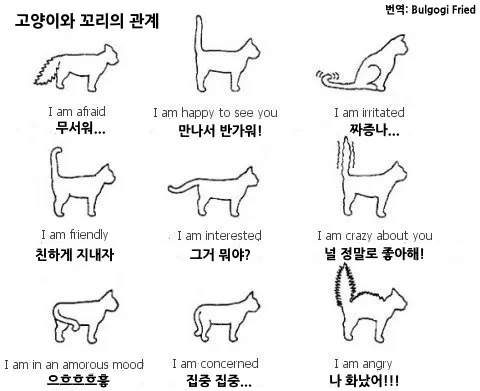
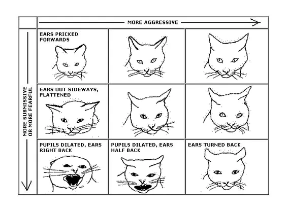

고양이에 대한 소개입니다.
고양이(Felis catus)는 포유류 식육목 고양이과의 동물이다.
현생 고양이를 포함한 모든 고양이과 동물들이 공통 조상으로부터 약 2000만 년 전에 분화한 이후, 들고양이는 10만~7만여 년 전부터 출현했으며, 가축화는 약 5만여 년 전 이집트나 메소포타미아 등 중동 지역의 아프리카들고양이(Felis lybica)가 식량 확보 등의 이유로 도시 등 인간의 대규모 정착지에 나와 살던 것을 인간이 키우기 시작한 것이 오늘날 고양이의 유래다. 인간과 고양이의 공존은 인간에게는 쥐를 잡아주고 고양이에게는 안정적인 식량 확보가 가능하다는 상호간의 이점이 있었으며, 이로 인해 고양이는 오랜 시간이 지나며 자연스럽게 자기가축화되었다. 이후 고양이는 아프로유라시아 전역에 퍼졌으며, 신항로 개척 시대 이후 아메리카와 오세아니아 대륙에도 퍼지게 되었다.
고양이의 신체적 특성과 습성은 다른 고양이과 동물들과 동일하여 빠른 반사신경, 탁월한 유연성, 날카로운 이빨, 넣고 꺼낼 수 있는 발톱 등이 있다. 고양이는 매우 긴 수면 시간을 가지고 있어 하루 종일 자는 시간이 굉장히 많으나 기본적으로 야생에서는 포식자 동물이라는 특성 상 박명박모성(薄明薄暮性)으로, 해뜰녘과 해질녘에 주로 행동한다. 또한 여타 고양잇과 동물들과 같이 고양이는 육식동물로, 야생에 사는 들고양이는 쥐, 다람쥐, 작은 새 등을 사냥해 잡아먹는다. 한국에서는 사는 곳에 따라 들고양이, 길고양이, 집고양이 등으로 구분되어 불린다. 고양이는 19세기 후반 이후 인간에 의해 품종개량 되어 현재는 다양한 묘종이 있으며, 이러한 품종 등록을 관장하는 국제고양이협회(TICA)는 현재 71개 묘종을 인정한다.
수명
| 집 고양이 | 길 고양이 |
|---|---|
| 평균 15~20년 | 평균 2~3년 |
감정 표현
- 야옹 소리
보통 고양이들은 다양한 행동을 통해 사람에게 친밀도나 여타 감정을 나타낸다. 그중 하나는 물론 '야옹'을 비롯한 다양한 발성이다.
그런데 흥미롭게도 고양이끼리는 거의 '야옹'을 하지 않는다. 야옹은 새끼 고양이가 자기 어미에게 내는 소리이며, 성묘가 된 후에는 다른 고양이에게 야옹을 거의 하지 않는다. 그런데 성묘들도 자기 주인을 비롯한 인간에게는 야옹 소리를 자주 낸다. (자주 내는 정도가 아니라, 인간과는 거의 야옹으로만 대화한다.) 고양이끼리는 야옹보다는 고양이의 이미지와 다른 특이한 소리 ("꾸르륵", "끼잉", "짹" 등...)를 주로 내며 의사표현을 한다. 물론, 그런 다른 소리를 인간에게 전혀 들려주지 않는 것은 아니라서, 고양이를 키우다 보면 야옹 이외 소리의 의미를 대강 알아듣게 되는 주인들도 많다. 고양이에게 있어 야옹이라는 표현은 사람과 소통하기 위해 발달된 표현이다.
- 꼬리 표현

사람과 만났을 때 고양이가 꼬리를 하늘을 찌를 듯이 치솟고 다가온다면 그 사람과 만난 것을 매우 좋아한다는 의미이다. 이 상태에서 꼬리가 부르르 떨린다면 거의 희열을 느낄 정도로 기쁘다는 뜻. 서있을 때 꼬리를 축 내려놓고 있으면 기분이 그냥저냥이거나 별로라는 뜻이며, 앉거나 엎드려 있을때 꼬리를 심하면 탁탁 소리가 날 정도로 땅바닥에 두들기면 매우 심기가 안 좋다는 뜻이니 자리를 피해줘야된다. 호기심이 발동하면 꼬리를 중간 높이로 치솟고 끄트머리를 살랑살랑 흔든다. 순간적으로 깜짝 놀라거나 거의 패닉에 빠진 수준으로 겁에 질리면 등줄기서부터 꼬리까지 털이 치솟고 등을 들어 올린다. 특히 꼬리의 털이 눈에 띄게 부풀어오른다.
새끼 때는 이 놀란 듯한 혹은 화난 듯한 털부풀리고 꼬리 세우기 제스쳐를 할 때가 굉장히 많은데, 딱히 공격 의사를 보이는 건 아니고 장난을 치는 것이다. 이 때는 특히 옆걸음질을 치면서 조금 우스꽝스러운 모습을 보여준다. 애묘인들 사이에서는 꼬리털을 확 세운다고 해서 꼬리펑이라고 불리기도 한다. 새끼들끼리 싸움 혹은 사냥을 흉내내며 노는 것으로 추측되지만 정확한 이유는 불명.
다만 꼬리가 짧은 고양이들의 경우 꼬리언어가 상당히 제한적이게 된다. 하지만 이런 고양이들을 키우는 묘주들은 고양이의 표정이나 제스처 등으로 감정을 알아채는 등 큰 불편은 없다.
- 귀 움직임

사람과 대면한 고양이의 얼굴 중에 귀가 앞쪽을 향하고 있다면 이것은 그 사람과 만났다는 것을 좋아하고 있단 것이다.
귀를 상단으로 세워 똑바로 앉는 고양이들은 집중해 소리를 듣기 위한 행동으로, 사실 경계하는 것이나 다름 없는데 호기심이 많은 녀석들이라면 흥미가 발동했다 볼 수 있다.
그외 귀를 평평히 놓고 눈을 크게 뜨는 경우엔 무섭거나 불안한 증세인데, 이럴 땐 자리를 피해주자. 이게 더 심해지면 흔히 마징가 귀라고 불리는, 귀를 뒤로 V자가 되도록 젖힐 때가 있는데 크게 놀라거나 도망가거나, 겁에 질리거나 갑자기 무슨 소리가 나는 등의 상황에서 보인다.